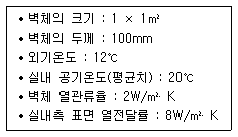
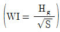
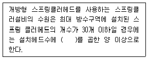
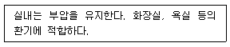
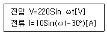
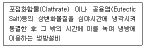
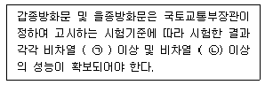

건축설비기사 (2015-03-08 기출문제)
1과목: 건축일반
1. 학교건축 계획에 대한 설명으로 옳지 않은 것은?
- 관리부분의 배치는 학생들의 동선을 피하고 중앙에 가까운 위치가 좋다.
- 주차장은 되도록 학교 깊숙이 끌어들이지 않고 한쪽 귀퉁이에 배치하는 것이 바람직하다.
- 배치형식 중 집합형은 일종의 핑거 플랜으로 일조 및 통풍 등 교실의 환경조건이 균등하며 구조계획이 간단하다.
- 운영방식 중 달톤형은 학급과 학생 구분을 없애고 학생들은 각자의 능력에 맞게 교과를 선택하며 일정한 교과가 끝나면 졸업한다.
(정답률: 82%)

2. 벽돌구조에 대한 설명으로 옳지 않은 것은?
- 아치나 돔형 등 조형미의 연출이 가능하다.
- 내화 및 내구성이 우수하다.
- 벽체 두께가 두꺼워져 실 면적이 줄어든다.
- 압축력에는 약하나 횡력과 인장력에는 강하다.
(정답률: 75%)
3. 건물내외의 기압차를 이용한 지붕 구조는?
- 절판구조
- 현수구조
- 공기막구조
- 곡면판구조
(정답률: 83%)
4. 에너지 절약방법에 대한 설명 중 옳지 않은 것은?
- 단열구조로 한다.
- 환기량을 많게 한다.
- 구조체를 기밀화 한다.
- 태양 에너지를 이용한다.
(정답률: 89%)
5. 절충식 지붕틀에서 사용되지 않는 부재는?
- ㅅ자보
- 종보
- 서까래
- 중도리
(정답률: 66%)
6. 리조트 호텔 배치계획의 부지조건으로 옳지 않은 것은?
- 관광지의 성격을 충분히 이용할 수 있는 위치일 것
- 수량이 풍부하고, 수질이 좋은 수원이 있을 것
- 조망 및 주변경관의 조건이 좋을 것
- 도심지에 위치할 것
(정답률: 91%)
7. 사무소 건축에 있어서 개실 시스템에 대한 설명으로 옳은 것은?
- 독립성과 쾌적감의 이점이 있는데 반해 공사비가 비교적 고가이다.
- 소음 발생 때문에 프라이버시가 결여되기 쉽다.
- 방 길이에는 변화를 줄 수 없으나, 연속된 긴 복도 때문에 방 깊이에 변화를 줄 수 있다.
- 대표적인 개실 시스템으로 오피스 랜드스케이핑이 있다.
(정답률: 65%)
8. 대형창호에 멀리온(mullion)을 설치하는 가장 주된 이유는?
- 기밀성을 양호하게 하기 위하여
- 채광성을 양호하게 하기 위하여
- 차음성을 양호하게 하기 위하여
- 진동에 의한 유리파손을 방지하기 위하여
(정답률: 81%)
9. 철근콘크리트 슬래브의 단변 방향의 철근에 해당하는 것은?
- 주근
- 부근
- 늑근
- 보강근
(정답률: 65%)
10. 다음과 같은 조건에서 실내측 벽면의 표면 온도는?

- 18℃
- 19℃
- 20℃
- 21℃
(정답률: 72%)
11. 눈부심(glare)의 방지 방법으로 옳지 않은 것은?
- 휘도가 낮은 광원을 사용한다.
- 플라스틱 커버가 장착된 조명기구를 사용한다.
- 글래어 존(glare zone)에 광원을 설치한다.
- 광원 주위를 밝게 한다.
(정답률: 81%)
12. 건축물에 작용하는 하중 중에서 기둥, 보, 바닥, 벽과 같은 구조체 자체의 무게에 해당되는 하중은?
- 풍하중
- 고정하중
- 적재하중
- 적설하중
(정답률: 87%)
13. 열람자가 책의 목록에 의해 책을 선택하여 관원에게 대출기록을 제출한 후 책을 대출하는 열람실의 출납시스템 형식은?
- 자유개가식
- 안전개가식
- 반개가식
- 폐가식
(정답률: 76%)
14. 상점건축에서 측면판매에 대한 설명 중 옳은 것은?
- 판매원이 정위치를 정하기가 용이하다.
- 포장대를 가릴 수 있고 포장 등이 편리하다.
- 양복, 침구, 전기기구, 서적, 운동용구점 등에서 쓰인다.
- 고객과 종업원이 쇼 케이스(show case)를 가운데 두고 상담하는 방식이다.
(정답률: 80%)
15. 초고층 골조시스템의 한 종류인 아웃리거시스템(outrigger system)에 대한 설명으로 옳은 것은?
- 간격이 좁게 배열된 기둥과 보를 건물 외부에 둘러싸서 횡하중에 저항하는 시스템
- 횡하중에 저항하는 코어를 외부 기둥에 연결하는 시스템
- 횡하중을 중앙부 코어에서 모두 부담하는 시스템
- 외부에 가새를 넣어 횡력을 부담하도록 하는 시스템
(정답률: 71%)
16. 음향설계에 관한 기술 중 옳지 않은 것은?
- 직접음과 반사음의 도달시간이 1/60초 이상 차이가 날 때 반향을 느낀다.
- 반사면에 흡음재를 사용하면 반향의 영향을 줄일 수 있다.
- 일반적인 실에서 명료도가 85% 이상이 되도록 설계한다.
- 음악실에서는 잔향시간을 길게 하고 강연장에서는 짧게 한다.
(정답률: 61%)
17. 일사 계획에 대한 설명 중 옳지 않은 것은?
- 일사량을 줄이려면 동서축이 길고 급경사 박공지붕을 가진 건물형이 유리하다.
- 건물 주변에 활엽수 보다는 침엽수를 심는 것이 유리하다.
- 겨울철의 난방 부하를 줄이기 위해 직달일사를 최대한 도입해야 한다.
- 난방 기간 중에 최대의 일사를 받기 위해서는 남향이 유리하다.
(정답률: 80%)
18. 목구조의 맞춤에 대한 설명으로 옳지 않은 것은?
- 부재의 마구리가 보이지 않게 45°로 잘라 맞댄 것을 안장맞춤이라 한다.
- 큰 부재에 구멍을 파고 그 속에 작은 부재를 그대로 끼워 넣는 맞춤을 통맞춤이라 한다.
- 부재의 마구리에서 필요한 일부를 남기고 나머지를 따내어 다른 부재의 구멍 속에 밀어 넣어 맞추는 것을 장부맞춤이라 한다.
- 위쪽 부재와 아래쪽 부재가 직각으로 교차할 때 접합면을 서로 따서 물리게 하는 것을 걸침턱맞춤이라 한다.
(정답률: 61%)
19. 습윤공기의 상태에 대한 설명 중 옳은 것은?
- 공기를 가열하면 상대습도는 높아진다.
- 공기의 습구온도는 건구온도보다 높다.
- 공기를 냉각하면 절대습도는 낮아진다.
- 건구온도와 습구온도가 동일하면 상대습도는 100%가 된다.
(정답률: 63%)
20. 구조체의 구성양식에 의한 분류가 아닌 것은?
- 곡면 구조
- 입체트러스 구조
- 가구식 구조
- 습식구조
(정답률: 73%)
2과목: 위생설비
21. 길이 50m, 내경 25mm인 배관에 물이 2m/s의 속도로 흐르고 있다. 관마찰계수가 0.03일 때 압력강하는?
- 12.24Pa
- 12.24kPa
- 120Pa
- 120kPa
(정답률: 52%)
22. 온도 0℃, 길이 400m의 강관에 60℃의 급탕이 흐를 때 강관의 신축량은? (단, 강관의 선팽창계수는 1.1×10-5℃ 임)
- 0.112m
- 0.264m
- 0.325m
- 0.413m
(정답률: 72%)
23. 급수관 이음쇠에 관한 설명으로 옳지 않은 것은?
- 플러그는 배관의 분기에 사용된다.
- 소켓은 직선 배관의 접합에 사용된다.
- 캡은 배관의 끝부분을 막을 때 사용된다.
- 리듀서는 구경이 다른 관을 접속할 때 사용된다.
(정답률: 84%)
24. 다음 중 왕복식 펌프에 속하는 것은?
- 베인펌프
- 기어펌프
- 디퓨저펌프
- 플런져펌프
(정답률: 58%)
25. 통기수직관이 없는 방식으로 유수에 선회력을 주어 공기코어를 유지시켜 하나의 관으로 배수와 통기를 겸하는 통기방식은?
- 섹스티아방식
- 각개통기방식
- 신정통기방식
- 회로통기방식
(정답률: 82%)
26. 급수방식 중 펌프직송방식에 관한 설명으로 옳지 않은 것은?
- 급수압의 변화가 크다.
- 전력 차단시 급수가 불가능하다.
- 단수시 저수량만큼 급수가 가능하다.
- 수질오염의 가능성은 고가수조방식보다 낮다.
(정답률: 63%)
27. 배수배관에서 사용되는 청소구의 원칙적인 설치 위치로 옳지 않은 것은?
- 배수수직관의 최하부 또는 그 부근
- 배수수평주관 및 배수수평지관의 기점
- 배수관이 45도를 넘는 각도로 방향을 변경한 개소
- 길이가 긴 배수수평주관 중간으로서 배수관의 관경이 100mm 이하인 경우는 30m 이내마다
(정답률: 67%)
28. 급수설비에 관한 설명으로 옳지 않은 것은?
- 음료수 계통에는 규정 잔류염소를 함유한 물이 공급된다.
- 아파트에 있어서 1인당 1일 평균사용수량은 160~250L 정도이다.
- 급수배관계통에서 강관과 동관을 직접 접속할 경우 동관의 부식이 촉진된다.
- 저수조 등의 기기가 있는 경우에는 급수량의 산정법으로 통상 인원에 의한 방법이 사용된다.
(정답률: 77%)
29. 진공방지기(vaccum breaker)가 사용되는 대변기의 급수방식은?
- 하이탱크식
- 세정밸브식
- 사이펀식
- 로탱크식
(정답률: 75%)
30. 펌프의 회전수 제어시 펌프의 회전수를 20% 증가하면, 유량은 얼마나 증가하는가?
- 10%
- 20%
- 44%
- 73%
(정답률: 72%)
31. 수질과 관련된 용어의 설명으로 옳지 않은 것은?
- SS란 오수 중에 떠있는 부유물질을 말하며, 탁도의 원인이 되기도 한다.
- DO란 오수 중의 산소요구량을 말하며, 오염도가 높을 수록 산소요구량이 적다.
- BOD란 생물화학적 산소요구량을 말하며, 오수 중의 분해 가능한 유기물의 함유 정도를 간접적으로 측정하는 데 이용된다.
- COD란 화학적 산소요구량을 말하며, COD값은 미생물에 의하여 분해되지 않은 유기질까지 화학적으로 산화되기 때문에, 일반적으로 BOD값보다 높게 나타난다.
(정답률: 79%)
32. 각개통기관의 관경은 접속하는 배수 관경의 최소 얼마 이상으로 하여야 하는가?
- 2배
- 3배
- 1/2
- 1/3
(정답률: 77%)
33. 급탕배관에 관한 설명으로 옳지 않은 것은?
- 중앙식 급탕설비는 원칙적으로 강제순환방식으로 한다.
- 온도변화에 따른 배관의 팽창길이는 배관의 선팽창계 수에 반비례한다.
- 급탕용 밸브나 플랜지 등의 패킹은 내열성 재료를 선택하여 사용한다.
- 관의 신축을 고려하여 건물의 벽 관통부분의 배관에는 슬리브를 사용한다.
(정답률: 88%)
34. 배수수직관과 통기수직관을 연결하는 통기관은?
- 신정통기관
- 반송통기관
- 공용통기관
- 결합통기관
(정답률: 55%)
35. 다음 중 급수배관의 관경결정과 관계없는 것은?
- 관균등표
- 동시사용률
- 마찰저항선도
- 확대관 저항계수
(정답률: 60%)
36. 급탕장치내의 전수량 3000L인 5℃의 물을 60℃까지 가열 할 때 물의 팽창량은? (단, 5℃ 물의 밀도는 0.999kg/L, 60℃ 물의 밀도는 0.983kg/L 임)
- 13L
- 26L
- 49L
- 74L
(정답률: 62%)
37. 웨버지수

는 가스의 연소성을 판단하는데 중요한 수치이다. Hg가 의미하는 것은?- 단연지수
- 엔트로피
- 발열량
- 가스비중
(정답률: 73%)
38. 연결송수관설비에 관한 설명으로 옳은 것은?
- 송수구는 지면으로부터 1m 이상 1.5m 이하의 위치에 설치하여야 한다.
- 방수구는 소방대상물의 층마다 설치하되, 공동주택과 업무시설의 1층, 2층에는 설치하지 않는다.
- 지면으로부터의 높이가 31m 이상이거나 지상 11층 이상인 특정소방대상물의 경우에는 습식설비로 하여야한다.
- 수직배관은 방화구조로 구획된 계단실 또는 파이프덕트 등 화재의 우려가 없는 장소에 설치하여야 한다.
(정답률: 59%)
39. 다음의 스프링클러설비에 관한 기준 내용 중 ( ) 안에 알맞은 것은?

- 0.8m3
- 1.2m3
- 1.6m3
- 2.0m3
(정답률: 77%)
40. 다음 중 배수트랩에 속하지 않는 것은?
- 관 트랩
- 드럼 트랩
- 디스크 트랩
- 사이폰 트랩
(정답률: 63%)
3과목: 공기조화설비
41. 냉방부하의 종류 중 현열 성분만을 갖는 것은?
- 조명부하
- 인체부하
- 실내기구부하
- 틈새바람부하
(정답률: 66%)
42. 습공기 선도의 표시사항에 속하지 않는 것은?
- 엔탈피
- 상대습도
- 현열비
- 엔트로피
(정답률: 76%)
43. 어떤 펌프의 회전수가 1000rpm일 때 축동력은 10kW 이었다. 이 펌프의 회전수를 1200rpm으로 증가시켰을 경우 축동력은?
- 12kW
- 14.4kW
- 17.3kW
- 20.7kW
(정답률: 52%)
44. 기온 ‧ 습도 ‧ 기류의 3요소의 조합에 의한 실내 온열감각을 기온의 척도로 나타낸 것은?
- 등가온도
- 작용온도
- 불쾌지수
- 유효온도
(정답률: 76%)
45. 온수난방 배관에서 리버스 리턴(Reverse return)방식을 사용하는 이유는?
- 배관의 신축을 흡수하기 위하여
- 배관의 길이를 짧게 하기 위하여
- 온수의 유량분배를 균일하게 하기 위하여
- 배관내의 공기배출을 용이하게 하기 위하여
(정답률: 79%)
46. 여름철 실내에 위치한 냉장고안의 습도는 실내공기와 비교하여 어떤 상태인가?
- 상대습도는 높고 절대습도는 낮다.
- 상대습도는 낮고 절대습도는 높다.
- 상대습도는 높고 절대습도도 높다.
- 상대습도와 절대습도는 동일하다.
(정답률: 55%)
47. 온수배관에 관한 설명으로 옳지 않은 것은?
- 배관의 신축을 고려한다.
- 배관재료는 내식성을 고려한다.
- 온수배관에는 공기가 고이지 않도록 구배를 준다.
- 온수보일러의 팽창관에는 게이트 밸브를 설치한다.
(정답률: 80%)
48. 냉각탑에 관한 설명으로 옳지 않은 것은?
- 냉각탑은 냉동기의 증발기를 냉각시키기 위하여 설치한다.
- 어프로치란 냉각수 출구온도와 입구공기의 습구온도차를 말한다.
- 냉각탑부하는 냉동기 응축기부하와 펌프 ‧ 배관부하를 합한 것이다.
- 보급수량은 냉각수 순환량에 증발수량과 비산수량을 합한 것이다.
(정답률: 59%)
49. 난방설비에 관한 설명으로 옳은 것은?
- 온수난방은 온수의 잠열을 이용하여 난방하는 방식이다.
- 증기난방은 온수난방에 비해 부하 변동에 따른 온도조절이 용이하다.
- 건물의 규모가 큰 경우에는 증기난방보다 온수난방이 설비비와 유지비가 적게 소요된다.
- 온수난방은 열용량이 커서 예열시간이 길게 소요되므로 간헐운전에는 예열부하가 크게 된다.
(정답률: 58%)
50. 팽창탱크에 관한 설명으로 옳지 않은 것은?
- 장치 내의 공기 배출구로도 사용된다.
- 장치 내의 물의 팽창으로 발생되는 압력을 흡수한다.
- 설치 위치에 관계없이 배관 내의 압력분포는 일정하다.
- 팽창한 물의 배출을 억제하여 열손실을 방지하는 데도 유효하다.
(정답률: 71%)
51. 전공기방식의 공기조화에서 에너지 절약을 위해 중간기에 외기냉방도 가능하도록 계획할 때 공조기 외에 시스템 구성을 위해 도입되어야 할 기기는?
- 재열기
- 전열교환기
- 리턴에어용 송풍기
- 고효율 공기정화장치
(정답률: 59%)
52. 공기조화방식 중 각층유닛방식에 관한 설명으로 옳지 않은 것은?
- 환기덕트가 필요 없거나 작아도 된다.
- 외기용 공조기가 있는 경우에는 습도제어가 쉽다.
- 각 층에 수배관을 설치해야 하므로 누수의 우려가 있다.
- 공조기가 중앙기계실에 집중되어 있으므로 관리가 용이하다.
(정답률: 64%)
53. 판넬(panel)형 복사난방에 관한 설명으로 옳지 않은 것은?
- 쾌적감이 높다.
- 실의 모양을 바꾸기 쉽다.
- 실내바닥의 이용율이 높다.
- 외기침입이 있는 곳에서 난방감을 얻을 수 있다.
(정답률: 62%)
54. 공조방식 중 변풍량방식에 사용되는 변풍량유닛에 관한 설명으로 옳지 않은 것은?
- 바이패스형은 덕트 내 정압변동이 없다.
- 유인유닛형은 실내의 2차 공기를 유인하므로 집진효과가 크다.
- 교축형은 덕트 내의 정압변동이 크므로 정압제어방식 이 필요하다.
- 교축형은 부하변동에 따라 송풍량을 변화시키고 송풍기를 제어하므로 동력이 절약된다.
(정답률: 60%)
55. 다음 중 원심식 송풍기에 속하지 않는 것은?
- 다익 송풍기
- 터보 송풍기
- 튜브형 송풍기
- 리밋로드 송풍기
(정답률: 54%)
56. 건구온도 22℃인 공기와 1℃인 공기를 3:1로 혼합하였을 때 혼합공기온도는?
- 14.25℃
- 15.75℃
- 16.75℃
- 17.75℃
(정답률: 68%)
57. 다음 설명에 알맞은 환기방식은?

- 급기팬과 배기팬의 조합
- 급기팬과 자연배기의 조합
- 자연급기와 배기팬의 조합
- 자연급기와 자연배기의 조합
(정답률: 81%)
58. 공기조화방식에 관한 설명으로 옳은 것은?
- 유인 유닛방식은 저속덕트를 사용하므로 덕트 스페이스를 작게 할 수 없다.
- 2중덕트방식은 단일덕트방식에 비해 덕트 샤프트 및 덕트 스페이스를 크게 차지한다.
- 단일덕트방식은 냉풍과 온풍을 혼합하는 혼합상자가 필요하므로 소음과 진동이 크다.
- 팬코일 유닛방식은 중앙기계실의 면적이 크며, 덕트방식에 비해 유닛의 위치 변경이 어렵다.
(정답률: 67%)
59. 진공 환수식 증기난방법에서 저압증기 환수관이 진공펌프의 흡입구보다 낮은 위치에 있을 때 응축수를 끌어 올리기 위해 설치하는 것은?
- 역압 방지기
- 리프트 피팅
- 버큠 브레이커
- 바이패스 밸브
(정답률: 80%)
60. 덕트 내를 흐르는 공기 유속이 12m/s, 정압이 25mmAq일 때 전압은? (단, 공기의 밀도는 1.2kg/m3이다.)
- 25.0mmAq
- 33.8mmAq
- 86.4mmAq
- 111.4mmAq
(정답률: 50%)
4과목: 소방 및 전기설비
61. 옥내배선에 사용되는 간선의 굵기 결정요소에 해당하지 않는 것은?
- 수용률
- 허용전류
- 전압강하
- 기계적강도
(정답률: 59%)
62. 부하측에 인가되는 전압을 √3배 승압시킬 수가 있으며 3상4선식 중성점 접지 배전방식으로 널리 사용되고 있는 변압기 결선 방식은?
- Y-△
- △-Y
- Y-Y
- △-△
(정답률: 66%)
63. 옥내 전반조명에서 등기구 사이의 간격 S(m)와 작업면에서 등기구까지의 높이 H(m)의 관계로 가장 알맞은 것은? (단, 직접조명인 경우)
- S ≦4H
- S ≦3H
- S ≦2H
- S ≦H
(정답률: 62%)
64. 자계 내에 도체를 놓고 도체를 상하로 움직이면 자속을 끊는 쇄교작용으로 유도기전력이 발생한다. 이때 도체의 움직이는 방향과 자속의 방향 그리고 유도기전력의 방향간의 관계를 나타내는 법칙은?
- 암페어의 왼손법칙
- 플레밍의 왼손법칙
- 암페어의 오른손법칙
- 플레밍의 오른손법칙
(정답률: 53%)
65. 제1종 접지공사에서 접지 저항치는 최대 얼마 이하로 유지하여야 하는가?
- 5[Ω]
- 10[Ω]
- 50[Ω]
- 100[Ω]
(정답률: 81%)
66. 교류 전원 전압 220 [V]에 단상 유도 전동기를 연결하여 운전하였더니 운전 전류가 2[A] 흘렀다. 전동기의 소비전력은? (단, 전동기의 역률은 50%이다.)
- 110[W]
- 220[W]
- 440[W]
- 880[W]
(정답률: 57%)
67. 전기력선의 기본적인 성질에 관한 설명으로 옳지 않은 것은?
- 두 전기력선은 서로 교차하지 않는다.
- 전기력선은 그 자신만으로 폐곡선이 된다.
- 전기력선의 방향은 양전하에서 나와 음전하로 들어간다.
- 전기력선은 도체의 표면에 수직으로 출입하며 도체 내부에는 전기력선이 없다.
(정답률: 56%)
68. 변류기[C.T]를 사용하는 목적은?
- 고전압을 측정하기 위해
- 교류를 직류로 바꾸기 위해
- 직류를 교류로 바꾸기 위해
- 교류의 대전류를 측정하기 위해
(정답률: 71%)
69. 급기온도를 일정하게 하고 풍량을 변화시킴으로서 실내 온도를 유지하는 가변풍량제어(VAV)에 적용되지 않는 것은?
- 정압제어
- 환기온도제어
- 송풍기풍량 비례적분제어
- VAV터미널 유닛 실온제어
(정답률: 50%)
70. 대전체가 가지는 전기량을 전하라고 하는데, 전하의 단위는?
- 줄[J]
- 핸리[H]
- 쿨롱[C]
- 패럿[F]
(정답률: 78%)
71. 교류전압과 전류를 다음과 같이 표시하였을 경우 이들의 관계를 잘못 설명한 것은?

- 전류의 최대치는 10[A]이다.
- 전압의 실효치는 220[V] 이다.
- 부하의 임피던스는 22[Ω]이다.
- 전류는 전압에 30°뒤진 위상차가 있다.
(정답률: 60%)
72. 초기 투자비가 너무 비싼 단점이 있지만 정전 시간이 거의 없어서 공급 신뢰도가 매우 좋은 수전방식은?
- 1회선 수전방식
- 2회선 수전방식
- 루프 회선 수전방식
- 스포트 네트워크 수전방식
(정답률: 70%)
73. 다음 중 시퀀스제어가 아닌 것은?
- 신호등
- 자동판매기
- 전기세탁기
- 비행기레이더자동추적
(정답률: 83%)
74. 다음 중 전하간의 정전유도현상을 이용한 기기는?
- 전자석
- 발전기
- 전기집진기
- 솔레노이드 밸브
(정답률: 66%)
75. 피드백 제어방식을 제어동작에 의해 분류할 경우, 연속 동작에 해당하는 것은?
- 미분 동작
- 2위치 동작
- 다위치 동작
- ON-OFF 동작
(정답률: 72%)
76. 다음 중 효율이 좋고, 안개가 많이 끼는 지역에서 가장 적합한 조명등은?
- 백열 램프
- 수은 램프
- 나트륨 램프
- 고압수은 램프
(정답률: 68%)
77. 전선에서 전류가 누설되지 않도록 전선을 비닐이나 고무 등의 저항률이 매우 큰 재료로 피복하는데, 이처럼 전류가 누설되지 않도록 하는 재료 자체의 저항을 의미하는 것은?
- 도체저항
- 접촉저항
- 접지저항
- 절연저항
(정답률: 84%)
78. 농형유도전동기에 관한 설명으로 옳지 않은 것은?
- 권선형에 비해 구조가 간단하여 취급방법이 간단하다.
- 기동전류가 커서 전동기 전선을 과열시키거나 전원전압의 변동을 일으킬 수 있다.
- 일반 산업용 및 건축설비에서 광범위하게 사용한다.
- 슬립링에서 불꽃이 나올 염려가 있기 때문에 인화성 또는 폭발성 가스가 있는 곳에서는 사용할 수가 없다.
(정답률: 75%)
79. 공조설비의 밸브나 댐퍼의 구동을 위하여 비례제어용으로 주로 사용되는 조작기는?
- 히트 펌프
- 서보 모터
- 모듀트럴 모터
- 직동식 전자밸브
(정답률: 77%)
80. 일정부하에 공급하는 배전선로에서 배전전압을 2배로 할 경우, 배전선로의 전력손실은 어떻게 되는가?
- 1/4로 감소
- 1/2로 감소
- 2배 증가
- 4배 증가
(정답률: 46%)
5과목: 건축설비관계법규
81. 건축시 특별시장 또는 광역시장의 허가를 받아야 하는 건축물의 층수 및 연면적 기준은?
- 층수가 21층 이상이거나 연면적의 합계가 5만 제곱미터 이상인 건축물
- 층수가 21층 이상이거나 연면적의 합계가 10만 제곱미터 이상인 건축물
- 층수가 31층 이상이거나 연면적의 합계가 5만 제곱미터 이상인 건축물
- 층수가 31층 이상이거나 연면적의 합계가 10만 제곱미터 이상인 건축물
(정답률: 74%)
82. 건축물의 에너지절약설계기준상 외기에 직접 면하고 1층 또는 지상으로 연결된 출입문을 방풍구조로 하지 않을 수 있는 경우에 속하지 않는 것은?
- 기숙사의 출입문
- 너비가 1.2m인 출입문
- 바닥면적이 200m2인 개별 점포의 출입문
- 사람의 통행을 주목적으로 하지 않는 출입문
(정답률: 62%)
83. 피뢰설비를 설치하여야 하는 대상 건축물의 높이 기준은?
- 10m 이상
- 20m 이상
- 30m 이상
- 40m 이상
(정답률: 83%)
84. 비상용승강기 승강장의 구조에 관한 기준 내용으로 옳지 않은 것은?
- 채광이 되는 창문이 있거나 예비전원에 의한 조명설비를 할 것
- 벽 및 반자가 실내에 접하는 부분의 마감재료는 불연재료로 할 것
- 승강장의 바닥면적은 비상용승강기 1대에 대하여 5m2 이상으로 할 것
- 노대 또는 외부를 향하여 열 수 있는 창문이나 배연설비를 설치할 것
(정답률: 78%)
85. 건축물의 출입구에 설치하는 회전문에 관한 기준 내용으로 옳은 것은?
- 계단이나 에스컬레이터로부터 1m 이상의 거리를 둘것
- 출입에 지장이 없도록 일정한 방향으로 회전하는 구조로 할 것
- 회전문의 회전속도는 분당회전수가 10회를 넘지 아니하도록 할 것
- 회전문의 중심축에서 회전문과 문틀 사이의 간격을 포함한 회전문날개 끝부분까지의 길이는 120cm 이상이 되도록 할 것
(정답률: 61%)
86. 건축법령상 제2종 근린생활시설에 속하지 않는 것은?
- 한의원
- 동물병원
- 노래연습장
- 일반음식점
(정답률: 74%)
87. 건축물의 지하층에 설치하는 비상탈출구에 관한 기준 내용으로 옳지 않은 것은?
- 비상탈출구의 유효높이는 1.5m 이상으로 할 것
- 비상탈출구의 유효너비는 0.75m 이상으로 할 것
- 비상탈출구의 출입구로부터 2m 이상 떨어진 곳에 설치 할 것
- 비상탈출구의 문은 피난방향으로 열리도록 하고, 실내에서 항상 열 수 있는 구조로 할 것
(정답률: 54%)
88. 6층 이상의 거실면적의 합계가 3000m2인 경우, 승용 승강기를 최소 2대 이상 설치하여야 하는 건축물은? (단, 8인승 승강기의 경우)
- 숙박시설
- 판매시설
- 업무시설
- 교육연구시설
(정답률: 61%)
89. 높이 기준이 60m인 건축물에서 허용되는 높이의 최대 오차는?
- 0.1m
- 0.9m
- 1.0m
- 1.2m
(정답률: 64%)
90. 문화 및 집회시설 중 공연장의 개별관람석의 바닥면적이 1500m2일 경우, 출구는 최소 몇 개 이상 설치하여야 하는가? (단, 각 출구의 유효너비를 2m로 하는 경우)
- 3개소
- 4개소
- 5개소
- 6개소
(정답률: 50%)
91. 숙박시설이 있는 특정소방대상물의 수용인원 산정 방법으로 옳은 것은? (단, 침대가 있는 숙박시설의 경우)
- 숙박시설 바닥면적의 합계를 3m2로 나누어 얻은 수
- 해당 특정소방대상물의 침대수(2인용 침대는 2개로 산정)
- 해당 특정소방대상물의 종사자수에 침대수(2인용 침대는 2개로 산정)를 합한 수
- 해당 특정소방대상물의 종사자수에 숙박시설 바닥면적의 합계를 3m2로 나누어 얻은 수를 합한 수
(정답률: 75%)
92. 공사감리자가 공사시공자에게 상세시공도면의 작성을 요청할 수 있는 건축공사의 기준으로 옳은 것은?
- 연면적의 합계가 1000m2 이상인 건축공사
- 연면적의 합계가 2000m2 이상인 건축공사
- 연면적의 합계가 5000m2 이상인 건축공사
- 연면적의 합계가 10000m2 이상인 건축공사
(정답률: 63%)
93. 방염성능기준 이상의 실내장식물 등을 설치하여야 하는 특정소방대상물에 속하지 않는 것은?
- 수영장
- 숙박시설
- 의료시설 중 종합병원
- 방송통신시설 중 방송국
(정답률: 81%)
94. 건축물의 냉방설비에 대한 설치 및 설계기준상 다음과 같이 정의되는 것은?

- 빙축열식 냉방설비
- 수축열식 냉방설비
- 잠열축열식 냉방설비
- 현열축열식 냉방설비
(정답률: 55%)
95. 다음은 방화문의 구조에 관한 기준 내용이다. ( )안에 알맞은 것은?

- ㉠ 20분, ㉡ 10분
- ㉠ 40분, ㉡ 20분
- ㉠ 1시간, ㉡ 30분
- ㉠ 2시간, ㉡ 1시간
(정답률: 68%)
96. 반자높이를 4m 이상으로 하여야 하는 대상에 속하지 않는 것은? (단, 기계환기장치를 설치하지 않은 경우)
- 종교시설의 용도에 쓰이는 건축물의 집회실로서 그 바닥면적이 200m2인 것
- 장례식장의 용도에 쓰이는 건축물의 집회실로서 그 바닥면적이 200m2인 것
- 판매시설의 용도에 쓰이는 건축물의 집회실로서 그 바닥면적이 200m2인 것
- 문화 및 집회시설 중 공연장의 용도에 쓰이는 건축물의 관람석으로서 그 바닥면적이 200m2인 것
(정답률: 64%)
97. 공동소방안전관리자를 선임하여야 하는 특정소방대상물에 속하지 않는 것은? (단, 관리의 권원이 분리되어 있는 특정소방대상물인 경우)
- 판매시설 중 도매시장
- 층수가 5층인 복합건축물
- 연면적이 5000m2인 복합건축물
- 지하층을 제외한 층수가 10층인 건축물
(정답률: 66%)
98. 옥외소화전 설비를 설치하여야 하는 특정소방대상물의 바닥면적 기준은? (단, 아파트 등, 위험물 저장 및 처리 시설 중 가스시설, 지하구 또는 지하가 중 터널은 제외)
- 지상 1층 및 2층의 바닥면적의 합계가 1000m2 이상인 것
- 지상 1층 및 2층의 바닥면적의 합계가 3000m2 이상인 것
- 지상 1층 및 2층의 바닥면적의 합계가 6000m2 이상인 것
- 지상 1층 및 2층의 바닥면적의 합계가 9000m2 이상인 것
(정답률: 55%)
99. 건축물에 설치하는 복도의 유효너비 기준이 옳지 않은 것은? (단, 연면적 200m2를 초과하는 건축물이며, 양 옆에 거실이 있는 복도의 경우)
- 초등학교 - 1.8m 이상
- 오피스텔 - 1.8m 이상
- 공동주택 - 1.8m 이상
- 고등학교 - 2.4m 이상
(정답률: 73%)
100. 건축법령상 다음과 같이 정의되는 용어는? 건축물이 천재지변이나 그 밖의 재해로 멸실된 경우 그 대지에 종전과 같은 규모의 범위에서 다시 축조 하는 것
- 개축
- 증축
- 재축
- 대수선
(정답률: 81%)